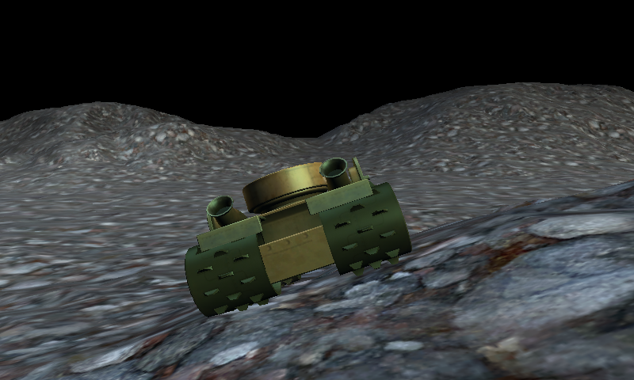

Tank on a Heightmap
Ported from Microsoft's XNA 4.0 Tank on a Heightmap sample.
Source for this sample on GitHub ↗

Play ▸Opens in a new tab. Use the keyboard to drive across the terrain.
About this sample
The original content processor turns a heightmap into textured terrain and stores its heights and normals with the model. Drive the tank across it to see the body align to each slope, the four wheels roll and the chase camera follow without dropping below the ground.
Controls
| Action | Keyboard | Gamepad |
|---|---|---|
| Drive forward / backward | W / S or Up / Down | Left stick or D-pad Up / Down |
| Turn | A / D or Left / Right | Left stick or D-pad Left / Right |
| Exit | Escape | Back |